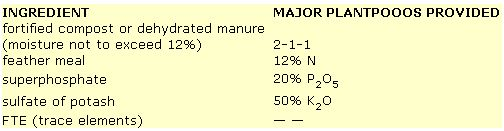
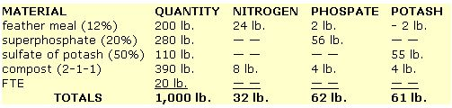
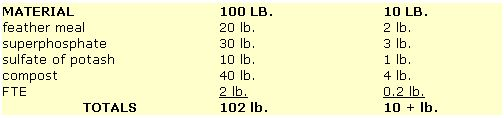
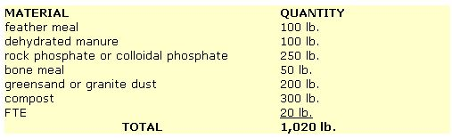
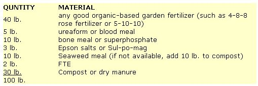
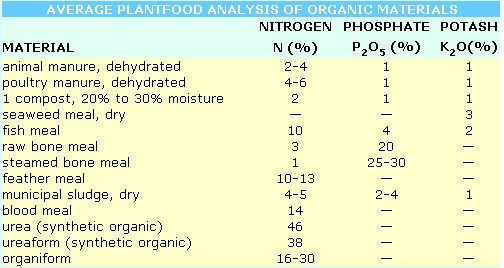

Lee Fryer began fighting our overdependence on chemical, fossil-fuel-based fertilizers in the days before many of us had even heard of "organic" farming. And we're pleased to have this expert (a man who's had decades of experience working with benign soil aids) explain how to . . .
An agricultural consultant and president of Earth Foods Associates, Mr. Fryer is the coauthor of a number of books and-for several years-ran a large fertilizer business that was based on converting seaweed, fish by-products, chicken feathers, and other nutrient-laden "waste" into farm- and garden-boosting products. We think you'll enjoy the following excerpts from his forthcoming book. The Bio-Gardener's Bible (scheduled for publication by Chilton this fall).
First, we should decide what grade, or analysis, we need in the mixed fertilizer. For example, in the case of a fertile, well-manured garden, only moderate nitrogen should be included. Phosphate should be at least double the nitrogen content, and potash should be about the same as the phosphate. Such a 1-2-2 ratio is about right for a general-purpose organic-based garden fertilizer.
In order to leave "room" for plenty of bulk organic ingredients, we will deliberately make this a medium-low-analysis product. So, we'll settle on a 3-6-6 grade. This means the finished product will contain a guaranteed analysis of 3% nitrogen (N), 6% phosphate (P2O5), and 6% potash (K2O). Thus, as noted above, the major plantfoods are provided in a 1-2-2 ratio.
To comply with these specifications, each 1,000 pounds, 100 pounds, and 10 pounds of this "model" fertilizer will contain the following amounts of nitrogen, phosphate, and potash.
After looking over the available fertilizer materials in our neighborhood, let us assume that the following ingredients are selected for this "model" general-purpose garden fertilizer.
To meet the requirements of our 3-6-6 guaranteed analysis, we may now prepare the following formula. It's calculated to yield 1,000 pounds. However, using simple arithmetic, the quantities can be determined for 100- and 10-pound batches.
NOTE: If materials are available, this fertilizer can be improved by adding 50 pounds of seaweed meal and 30 pounds of Epsom salts (magnesium sulfate). The quantity of compost would be reduced to accommodate these extra ingredients. Doing this will add seaweed's large assortments of trace minerals, and useful magnesium from the Epsom salts.
In accordance with good fertilizer practice, we've provided enough materials to slightly exceed the requirements of the formula. It is noted that 3% of 1,000 pounds equals the 30 pounds of nitrogen required. Six percent (6%) of 1,000 pounds equals the 60-pound requirements for phosphate and potash, respectively.
In this simple home mixing operation, we would round off the superphosphate quantity to 300 pounds, the potash to 100 pounds, and the compost to 400 pounds, revising the total to 1,020 pounds.
The quantities for smaller batches are as follows.
ADAPTATION FOR STRICT ORGANIC GARDENERS
To adapt this formula in accordance with strict organic principles, the following revisions are suggested. However, other combinations of organic ingredients are also possible.
This formulation does not fulfill the requirements of a 3-6-6 grade, in terms of available NPK nutrients, since the phosphate and potash are not provided in readily available forms. However, this is a practical organic-type fertilizer for gardens, shrubs, berries, and fruit trees.
WEIGHING AND MIXING INSTRUCTIONS
When neighbors get together to blend and mix a large batch of fertilizer, such as 1,000 pounds or more, any kind of fairly accurate platform scales can be used. A sturdy box can be preweighed to determine its tare, to be deducted from gross weight. The proper amounts of the various ingredients can then be weighed out and determined. (For smaller batches, simply use any fairly accurate household scale.)
I mix my fertilizers on a concrete driveway or auto parking place, but any dry flat surface will do. Simply pour the various materials on top of each other in a conical pile, adding the small quantities last. Then mix everything with a shovel by scooping material off the edges and pouring it on top. Mix the pile thoroughly at least three times.
The finished fertilizer can be put into convenient-sized bags or boxes. Poly liners are recommended, since some fertilizer materials attract moisture. Store the containers in a dry place.
HOW TO SHOP FOR FERTILIZER MATERIALS . . . DON'T GET FRUSTRATED
At present, in most urban communities, local garden centers offer packaged superphosphate, bone meal, sulfate of potash, Epsom salts, and urea. Some of them cater to horticultural-type customers and provide FTE and chelated minerals. Dehydrated manure and compost are also widely available. (You can do most of your shopping by telephone, using the Yellow Pages.)
Also, resourceful gardeners may be able to obtain bulk material supplies by finding a fertilizer mixer/distributor someplace in the surrounding area. Such companies are frequently willing to sell small quantities of materials to pleasant people who call on them. They may even have such often hard-to-get items as FTE, Sul-po-mag, and chelated minerals.
However, if the bulk NPK-type materials aren't available, a practical alternative is to buy a sack (or more) of a fairly good, already mixed garden fertilizer . . . and fortify and "sweeten" it with biotype materials (organic-based rose fertilizer usually contains more potash than do other varieties). Here is a recipe for 100 pounds of Deluxe Garden Fertilizer, using an already mixed fertilizer as a base.
The guaranteed analysis (grade) of this fertilizer is approximately 4-6-6. This formula can be made strictly organic by selecting a 100% organic mixed-fertilizer base and eliminating the ureaform and superphosphate. Ground rock phosphate and granite dust may be added.
EDITOR'S NOTE: More soil-care tips can be found on this article .
SOME BIOLOGICAL FERTILIZER INGREDIENTS
The information in the accompanying table will assist you if you wish to prepare your own balanced fertilizer mixtures containing the right amounts of major plantfoods. Here are a few additional properties of several of the commonly used organic-type fertilizer materials.
ANIMAL AND POULTRY MANURES
Animal manures are inherently low in actual plantfoods. For example, dehydrated cow manure usually contains less than one-sixth the amount of nitrogen found in sulfate of ammonia (21% N). . . even though it smells stronger and richer. However, we use the manure materials because they also feed and stimulate the soil organisms that build fertility and capture nitrogen from the atmosphere . . . they improve the condition of the soil . . . and they promote good air and moisture relationships.
As some gardeners already know, poultry manure has a higher nitrogen content than animal manure, sometimes as high as 4% to 6% in the dehydrated product. Compared with popular commercial fertilizers, though, even poultry manure is a low-analysis material. It contains about one-sixth the nitrogen of ammonium nitrate (33% N) and one-tenth the amount in urea (46% N).
It's a sound practice to compost manure materials before application. This increases their fertilizer value.
COMPOST
Compost is biologically processed organic matter, improved in this way for its use as fertilizer. Even the bodies of the billions of bacteria and fungi that perform the composting process add values to the product.
The quality of the compost is dependent to a large degree on its bulk constituents. A compost can be made with manures, animal and poultry dressing wastes, feathers, blood, fish, leaves, grass clippings, weeds, sawdust, kitchen garbage, seaweed, sewage sludge, and any other available biomass material.
However, compost is enhanced when animal, poultry, and/or fish materials are included with the vegetable materials. This provides readily available protein-type food for the composting organisms, thus promoting their activity and populations in the compost pile.
SEAWEED MEAL AND RAW SEAWEED
Again, an important principle must be kept in mind: We do not use seaweed as a source of NPK-type plantfoods. In fact, seaweed contains only a smidgen of nitrogen, a speck of phosphate, and a morsel of potash. Its signal values are in the excellent assortments of secondary and trace minerals it provides, such as magnesium, sulfur, iron, zinc, iodine, molybdenum, boron, manganese, and copper.
Also, seaweed is a good soil conditioner, serving to loosen and improve tough, cloddy soils. In addition, it acts as a chelating agent to help plants glean minerals for an adequate diet.
BONE MEAL
The bones of all animals are composed mainly of calcium and phosphorus, in a compound called bone phosphate of lime. When they are ground raw, portions of meat, cartilage, and marrow are retained-adding to the protein (nitrogen) content-and the product is called raw bone meal. It contains from 2% to 3% nitrogen (N), 18% to 20% phosphate (P2O5), and 28% to 30% lime (CaO). As such, it is the finest form of phosphate fertilizer available for use by gardeners and nursery growers.
Steamed bone meal is a white powder-type material. It may contain 28% to 30% phosphate and only 1% or less of nitrogen. It, too, is a good phosphate fertilizer but has a lesser effect than raw meal as a biological stimulant.
FEATHER MEAL
As practical gardeners learned many years ago, feathers are excellent fertilizer materials. This is because they contain over 90% protein, thus providing 12% to 14% nitrogen (dry basis).
Fertilizer manufacturers know how to use steam heat and suitable reagents to process feathers into feather meal. It contains 10% to 13% nitrogen, plus the various minerals birds use in growing their feather clothing.
Feather meal may become available in local gardening areas as the costs of other fertilizers rise to scandalous levels. If so, it can be used as a nitrogen ingredient in mixed fertilizers, or applied straight.
|
|
 |
 |
|
 |
 |
 |
|
 |
|
|